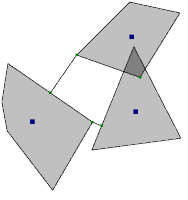

PolygonDistance.h
Three convex polygons. The line segments connecting the closest points are shown. The green dots are the closest points. Two polygons overlap, marked in dark gray. A point of intersection is shown in green. The distance is computed by formulating the problem as a linear complementarity problem (LCP).
|  |